条件缩到150%，保留真实游戏规则
从正式 StartScene 首页进入第一章，前七轮每轮实际打出六张牌，第八至十一轮保留六张手牌直接开战，结算时由原业务统一清牌。所有胜负来自真实 BattleEnded，未使用强制胜利、清敌或跳关指令。
- 执行时间 · 北京时间
- 2026-10-22 15:58:10 — 2026-10-22 16:08:50
- 运行环境
- Unity 2022.3.15f1c1 · 图形 Editor PlayMode
- 测试攻击
- 额外 +50%，即原有普通攻击最终伤害 ×1.5；沿用原取整
- 其他测试强化
- 攻速 +0% / 防御 +0% / 生命无额外加成
- 手牌策略
- 第1—7轮：每轮6张；第8—11轮：0张
- 重复与门限
- repeat=1 / warmup=0；性能阈值关闭
未固定随机种子，手牌、准备增益和战斗事件沿用正常随机。与昨天的对比还包含阵容、末四轮出牌策略和随机差异，不能当作只改变攻击倍率的单变量实验。
电脑插件两次初始化均被系统1385错误阻断；本次实际通过 Unity MCP 控制编辑器、官方 Automation 执行流程，事件层模拟输入。截图来自 Unity 正常帧末；没有操作系统鼠标或真机触屏覆盖。
双方出手与实际扣血逐轮记录
框架 success=true；completed/requested=1/1；failedIterations=0。业务 passed，60/60 步，110 次指针点击，42 次验证落牌，计划内业务GM=0。
| 轮 | 落牌 | 开战敌棋 | 模拟秒 | 我方攻击 | 敌方攻击 | 我方承伤HP | 敌方承伤HP | 结果 |
|---|---|---|---|---|---|---|---|---|
| 1 | 6 | 6 | 13.1250 | 271 | 4 | 28 | 7,234 | 玩家胜利 |
| 2 | 6 | 6 | 24.6875 | 665 | 13 | 132 | 25,679 | 玩家胜利 |
| 3 | 6 | 6 | 68.1250 | 2,047 | 62 | 1,007 | 93,648 | 玩家胜利 |
| 4 | 6 | 6 | 51.8750 | 2,328 | 34 | 515 | 100,167 | 玩家胜利 |
| 5 | 6 | 6 | 56.2500 | 2,517 | 59 | 576 | 104,759 | 玩家胜利 |
| 6 | 6 | 7 | 48.7500 | 2,900 | 101 | 1,996 | 121,445 | 玩家胜利 |
| 7 | 6 | 7 | 52.8125 | 2,605 | 131 | 2,774 | 123,912 | 玩家胜利 |
| 8 | 0 | 7 | 64.3750 | 3,574 | 175 | 2,841 | 129,321 | 玩家胜利 |
| 9 | 0 | 7 | 77.5000 | 2,359 | 365 | 3,591 | 128,876 | 玩家胜利 |
| 10 | 0 | 7 | 85.3125 | 487 | 202 | 1,850 | 67,148 | 玩家胜利 |
| 11 · Boss | 0 | 9 | 42.5000 | 196 | 174 | 1,274 | 9,933 | 玩家胜利 · 擒王 |
我方有攻击者来源的承伤 16,584 HP，敌方 733,297 HP；无攻击者来源的环境/支援伤害分别为 0 / 178,825 HP。不能把所有敌方扣血都归为玩家普通攻击。正伤害事件共 21,099 次。
零落牌有计数与开战手牌双重证据
末四轮零落牌检查：4/4通过。除去计划中没有 deployHand，还核对运行期落牌计数为0、开战手牌为6、结算按业务统一清为0；roundWonNoHand同时核对三者。
| 轮 | 已验证落牌 | 开战手牌 | 结算手牌 | 实际状态 |
|---|---|---|---|---|
| 8 | 0 | 6 | 0 | 零落牌 |
| 9 | 0 | 6 | 0 | 零落牌 |
| 10 | 0 | 6 | 0 | 零落牌 |
| 11 | 0 | 6 | 0 | 零落牌 |
“不下手牌”只限制玩家主动落牌。轻松模式的援军、准备精英与已有棋子继续攻击仍是正常业务；因此零落牌不等于场上棋子总数恒定。
| 轮 | 我方存活 开战→结算 | 敌方存活 开战→结算 | 我方HP 开战/上限→结算 | 敌方HP 开战/上限→结算 |
|---|---|---|---|---|
| 1 | 7 → 8 | 6 → 0 | 728/728 → 845 | 4816/4816 → 0 |
| 2 | 14 → 15 | 6 → 0 | 1551/1598 → 1727 | 19611/19611 → 0 |
| 3 | 21 → 17 | 6 → 0 | 2684/2711 → 2433 | 73325/73325 → 0 |
| 4 | 23 → 19 | 6 → 0 | 2817/2848 → 2692 | 81227/81227 → 0 |
| 5 | 26 → 23 | 6 → 0 | 3258/3258 → 3268 | 82614/82614 → 0 |
| 6 | 29 → 24 | 7 → 0 | 5151/5189 → 4246 | 106605/106605 → 0 |
| 7 | 30 → 28 | 7 → 0 | 3950/4118 → 4090 | 108365/108365 → 0 |
| 8 | 28 → 25 | 7 → 0 | 4090/4090 → 3670 | 110125/110125 → 0 |
| 9 | 26 → 9 | 7 → 0 | 3810/3810 → 1049 | 111884/111884 → 0 |
| 10 | 9 → 3 | 7 → 0 | 1416/1740 → 334 | 44392/44392 → 0 |
| 11 | 3 → 1 | 9 → 19 | 257/439 → 1 | 13059/13059 → 18172 |
血量为当时存活名单的合计。回血、援军、复活和升星都会影响总量，不能用开战减结算血量代替实际承伤，也不能用人数差当精确阵亡计数。
Boss按真实结算，增益按实际记录
第11轮开战敌棋 9，主将编号 294；结算 Player，模拟 42.5000 秒，Boss技能施放 4 次，kingCaptured=true。
全程 Boss 技能事件为 4 次；这不是九技能逐项验收。以下记录每轮实际准备增益，方便解释血量与输出变化。
| 轮 | 原有轻松模式 | 实际准备增益（运行时枚举） |
|---|---|---|
| 1 | true | 万箭齐发（ArrowVolley）、坚壁守护（Armor）、慧眼共鸣（EyePower）、疾风连击（Haste）、远射专精（Ranged）、重弩援军（Elite） |
| 2 | true | 万箭齐发（ArrowVolley）、远射专精（Ranged）、天赋觉醒（Upgrade）、坚壁守护（Armor）、慧眼共鸣（EyePower）、破阵追击（Execution） |
| 3 | true | 万箭齐发（ArrowVolley）、气脉畅通（Liberties）、远射专精（Ranged）、生生不息（Regeneration）、慧眼共鸣（EyePower） |
| 4 | true | 万箭齐发（ArrowVolley）、慧眼共鸣（EyePower）、坚壁守护（Armor）、疾风连击（Haste） |
| 5 | true | 万箭齐发（ArrowVolley）、不屈活棋（EncirclementImmunity）、三重护盾（Shields）、重弩援军（Elite）、气脉畅通（Liberties）、复苏储备（Recovery） |
| 6 | true | 万箭齐发（ArrowVolley）、慧眼共鸣（EyePower）、生命绽放（Vitality）、疾风连击（Haste） |
| 7 | true | 万箭齐发（ArrowVolley）、破阵追击（Execution）、慧眼共鸣（EyePower）、全军奋起（Attack）、汲取之力（LifeSteal）、不屈活棋（EncirclementImmunity） |
| 8 | true | 万箭齐发（ArrowVolley）、汲取之力（LifeSteal）、三重护盾（Shields）、疾风连击（Haste）、不屈活棋（EncirclementImmunity） |
| 9 | true | 万箭齐发（ArrowVolley）、重弩援军（Elite）、三重护盾（Shields）、坚壁守护（Armor）、破阵追击（Execution） |
| 10 | true | 万箭齐发（ArrowVolley）、生命绽放（Vitality）、三重护盾（Shields）、慧眼共鸣（EyePower）、天赋觉醒（Upgrade） |
| 11 | true | 万箭齐发（ArrowVolley）、慧眼共鸣（EyePower）、气脉畅通（Liberties）、汲取之力（LifeSteal） |
正常帧末截图，保留完整UI
最终运行共归档 38 张帧末PNG，下方精选 11 张。图片含真实UI，点击放大；时间索引见附件。异步截图请求时间与落盘画面可能相差一帧，画面阶段经人工复核。第二章准备检查后的帧末图已呈现首页，不将该图当作第二章六牌就绪画面；相关准备条件以业务数据断言为准。

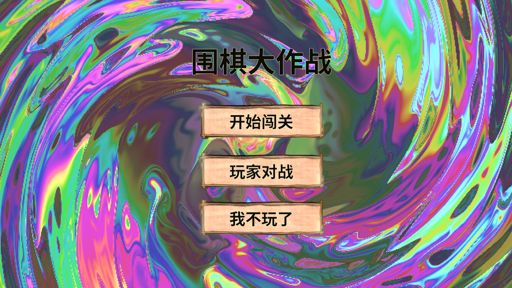
正式入口首页点击放大 ↗
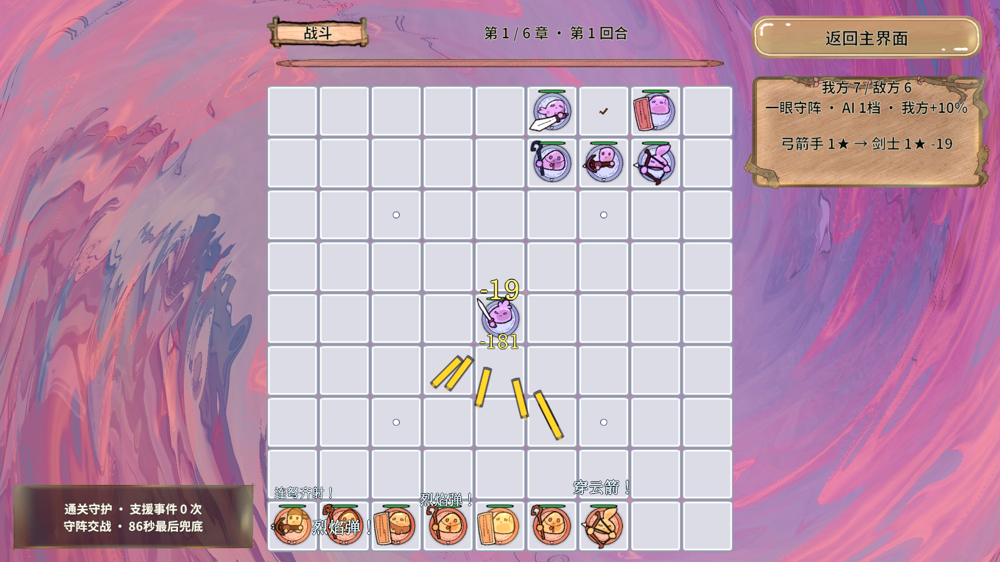
第1轮实际交战点击放大 ↗
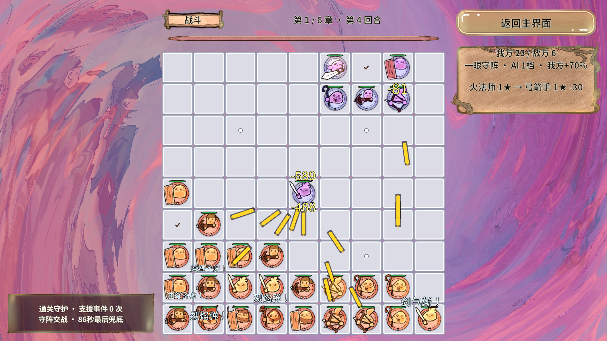
第4轮实际交战点击放大 ↗
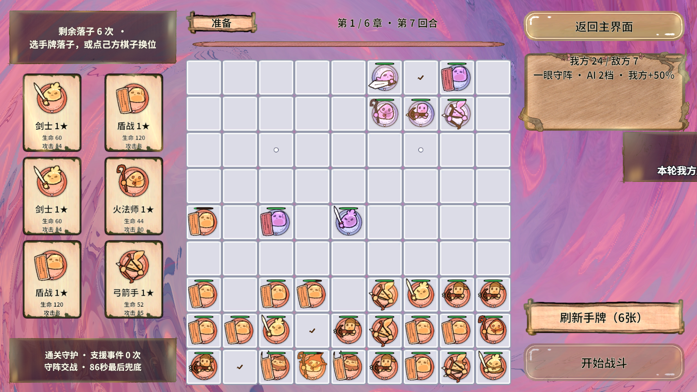
第7轮准备点击放大 ↗
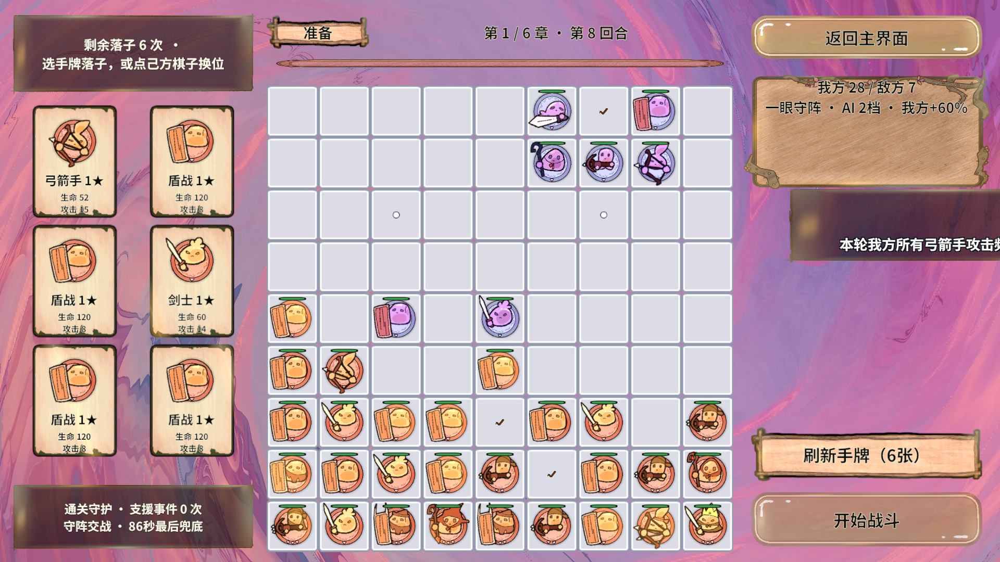
第8轮准备点击放大 ↗
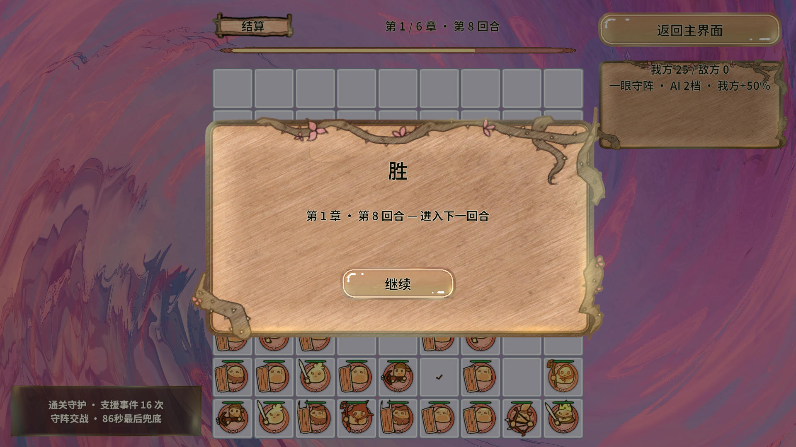
第8轮结算点击放大 ↗
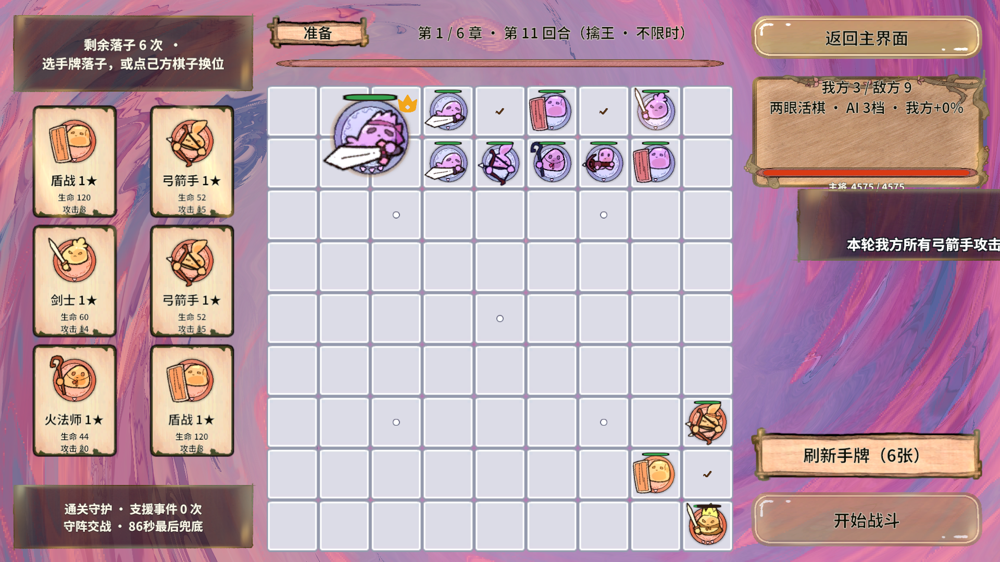
Boss轮准备点击放大 ↗
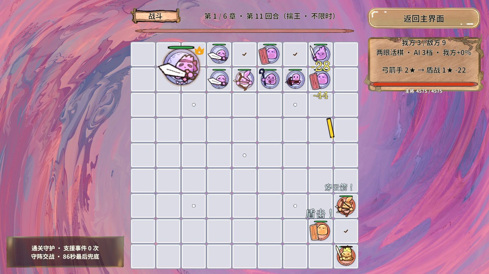
Boss实际交战点击放大 ↗
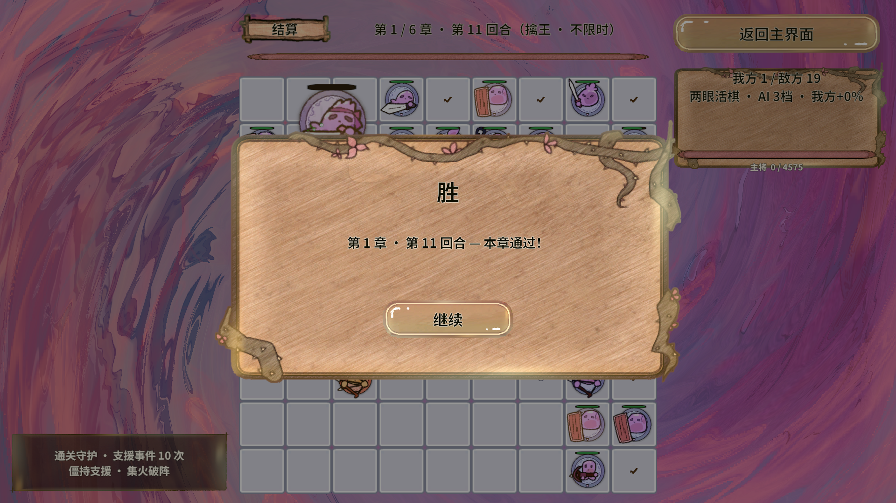
Boss实际结算点击放大 ↗
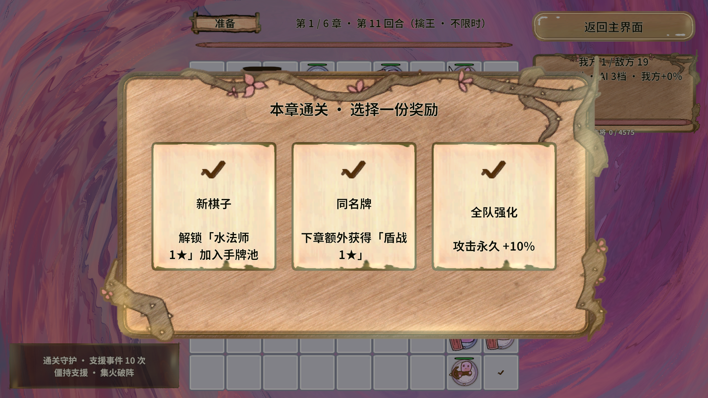
章节奖励点击放大 ↗
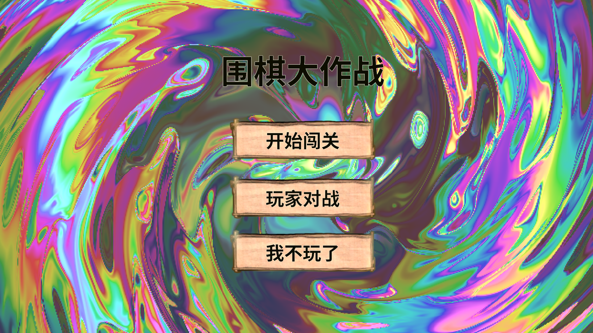
回到首页点击放大 ↗只记录本次Editor性能
平均帧时间
P95帧时间
最大帧时间
框架耗时 639.76 秒；采样 161,424 帧。峰值MonoUsed 755,642,368 B，AllocatedMemory 456,078,045 B。统计混合Editor、加载、场景切换、PNG取证和战斗，两个内存计数不能相加作总内存。最终作业使用--attach连接由本次测试开启的Play，结束后另行核对首页并停止Play；不是冷启动AB测试。
首轮失败保留，最终结果单独认定
正式运行前：GM注册表为空
前置失败第一次MCP进入Play后，gm.list没有注册命令，未启动业务Scenario、未落牌。停止该次Play后由官方CLI从StartScene重新启动，注册恢复。根因未完全隔离，原始注册表与状态保留在attempt00-startup。
首轮业务作业：截图工具触发Unity错误
不计通过job 407e164591684d6f988ec487c259a6e7，完成第1轮，第2轮期间终止；12/60步骤、12次落牌，5条Unity Error。堆栈均指向MCP ScreenshotUtility.CaptureCompositedAfterFrame内EditorApplication.Step递归PlayerLoop。Scenario错误门禁失败，cleanup取消了业务执行器，因此业务末态为cancelled；首因以scenario-result和unity-errors.jsonl为准。
修正取证与清牌断言后重跑
通过改为ScreenCapture.CaptureScreenshot正常帧末异步取证，不手工推进PlayerLoop。保留攻击50/攻速0/防御0与末四轮零牌条件，不放宽断言。此前脚本刷新后编辑器队列一度等待，聚焦SceneView正常更新后恢复。最终作业Unity错误 0，业务错误 0。
第二轮：结算手牌断言错误
测试断言失败第二轮实际前8轮均胜利、Unity错误0，第8轮实际落牌0、开战6牌、结算0牌。但新增断言误要求结算仍有6牌，导致等待180秒超时（总耗时516.39秒）。BattleService.EndBattle本来就在广播前清空手牌；修正为roundWonNoHand验证落牌0、开战6、结算0后，从首页完整重跑。失败业务JSON、计划和截图位于attempt02-settlement-hand-assertion，没有把该轮误算作完整通章。
第三轮：进度文件共享冲突
工具中断job 526ca13f48ee4d00ba8383228f936596，前7轮胜利，第8轮交战中被文件占用错误中断，Unity错误0。项目CLI取消可选progress.json高频读取，避免与Windows原子替换竞争；共享冲突的底层来源尚未完全隔离。完整失败JSON与25张截图归档于attempt03-progress-file-lock。
本轮期间修复：敌棋死亡后长期残留
专项43条通过固定输入复现HUD保留结束Tween，随后误停被复用的死亡消融。修复HUD与范围波纹的OnKill解绑，并为死亡视图增加独立回收期限及旧回调取消。GamePieceDeathChecks实际43条通过，既有GameFeelChecks通过；本次最终通章另外持续观察死亡1.6游戏秒后是否仍有同Id活动视图，结果见附件death-monitor.txt。
查看修复日志 ↗原始证据与复现入口
本轮验证 Revolution 的真实业务链路：官方Automation队列/GM → 常驻执行器 → EventSystem分帧输入 → UI/战斗事件 → RevScene场景交接 → owner与测试强化回收。结论范围限于本次Editor流程与实际条件。
最终作业ID：d570573cf3704a4da82b623b7da9d5af。报告数据优先使用最终作业；失败作业与昨日数据均单独标明。
复现命令
python -X utf8 RevGame_Client/Tests/BusinessFlowAutomation/run_flow.py RevGame_Client/Tests/BusinessFlowAutomation/plans/first-chapter-2026-10-22.json --output 你的结果目录
# Unity图形编辑器已打开且编译完成；默认从StartScene启动。
# 本计划启用正常帧末PNG；勿在作业中调用同步Step式MCP截图。
# 已在Play需显式--attach；不会自动停止用户原有Play。最终框架原始结果摘要
{
"name": "第一章攻击150%·末四轮零手牌实测",
"resultPath": "G:\\RevRoot\\MyRevGame\\RevGame_Client\\UnityProject\\RevGame.Unity\\Library\\RevolutionAutomation\\jobs\\d570573cf3704a4da82b623b7da9d5af\\scenario-result.json",
"startedUtc": "2026-10-22T07:58:10.7926290+00:00",
"finishedUtc": "2026-10-22T08:08:50.4954076+00:00",
"unityVersion": "2022.3.15f1c1",
"environment": "Unity Editor PlayMode",
"unityLogPath": "G:\\RevRoot\\MyRevGame\\RevGame_Client\\UnityProject\\RevGame.Unity\\Library\\RevolutionAutomation\\jobs\\d570573cf3704a4da82b623b7da9d5af\\unity-errors.jsonl",
"requested": 1,
"completed": 1,
"failedIterations": 0,
"warmupCompleted": 0,
"success": true,
"cancelled": false,
"elapsedSeconds": 639.7593472,
"frameSamples": 161424,
"frameMeanMs": 3.9630797688282553,
"frameP95Ms": 6.8,
"frameMaxMs": 754.963219165802,
"peakMonoUsedBytes": 755642368,
"peakAllocatedMemoryBytes": 456078045,
"unityErrors": 0,
"errors": []
}报告日期2026-10-22，Asia/Shanghai；昨天的报告保留。代码补充开发态观测与取证、今日测试计划，并修复死亡视图回收与HUD动画句柄。正式数值、胜负规则、框架快照与存档未改。当前工作区已有其他修改，本次未提交或推送，.codex内容不入库。